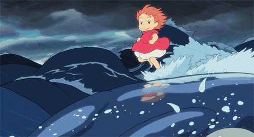
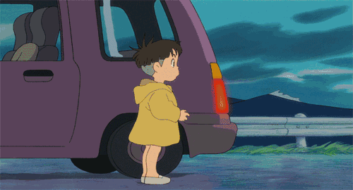

剧情简介

五岁的宗介与妈妈理莎，住在一个靠海小村庄的山崖上。身为船长的爸爸长年出海，留下宗介与妈妈相依为命。因此五岁的宗介从小就超龄的懂事，也知道自己必须担起家中的责任，要代替父亲照顾妈妈。一天当他在山崖下岩石遍布的海滩上玩耍，他拾回了一只头困在玻璃瓶里的人鱼波妞，宗介救出波妞并且将她养在一个绿色的塑料桶里。

波妞与宗介相互着迷。宗介跟波妞说：“别担心，我会保护你、好好照顾你”。但是波妞的父亲魔法师藤本，逼着波妞跟他回海里。波妞坚决不肯并开始大吵大闹，她心意已决，要变成人类小女孩回到宗介的身边，于是波妞竟然决定离家出走。就在她离家之前，波妞把爸爸最珍藏的“生命之水”倒到海水里。这个举动造成极大的动荡，海平面开始快速上升，波妞的妹妹们都变成了鱼形的巨大海浪并吞噬了宗介住的小镇，还差点连宗介山崖上的家都波及。